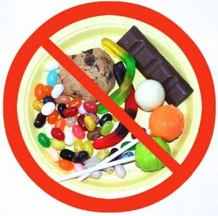

Aprende a identificarlos y conoce cómo afectan tu salud.

Los alimentos procesados son productos que han sido modificados mediante procesos industriales para mejorar su conservación, sabor, textura o facilidad de consumo. Algunos solo reciben cambios mínimos, mientras que otros contienen numerosos ingredientes añadidos como azúcares, grasas, sal, colorantes y conservadores.
No todos los alimentos procesados son perjudiciales. Por ejemplo, la leche pasteurizada o las verduras congeladas son alimentos procesados que conservan un buen valor nutricional. El problema principal se encuentra en los alimentos ultraprocesados, ya que contienen grandes cantidades de ingredientes que pueden afectar la salud cuando se consumen frecuentemente.
| Procesados | Ultraprocesados |
|---|---|
| Pan integral | Pastelillos industriales |
| Queso natural | Botanas empaquetadas |
| Yogur natural | Cereales azucarados |
| Verduras congeladas | Sopas instantáneas |
| Atún en agua | Comida rápida |
Se utilizan para mejorar el sabor y aumentar la duración del producto.
Favorece la conservación, pero en exceso puede elevar la presión arterial.
Incrementan el riesgo de enfermedades cardiovasculares.
Permiten que los alimentos duren más tiempo sin descomponerse.
Consumir alimentos ultraprocesados de manera frecuente puede provocar diferentes problemas de salud debido a su alto contenido de calorías, sodio, azúcares y grasas.
En México, los productos envasados utilizan sellos frontales de advertencia que ayudan a identificar cuando un alimento contiene exceso de calorías, azúcares, sodio, grasas saturadas o grasas trans.
Leer estos sellos permite tomar decisiones de compra más saludables y reducir el consumo de productos con bajo valor nutricional.
| Alimento natural | Beneficio |
|---|---|
| Manzana | Rica en fibra y vitaminas. |
| Zanahoria | Aporta vitamina A. |
| Avena | Favorece la digestión. |
| Frijoles | Excelente fuente de proteína vegetal. |
| Pescado | Contiene grasas saludables y proteínas. |
Consumir alimentos procesados ocasionalmente no representa un problema si forman parte de una alimentación equilibrada. Sin embargo, reducir el consumo de productos ultraprocesados y preferir alimentos frescos ayuda a prevenir enfermedades, mantener un peso saludable y mejorar la calidad de vida.